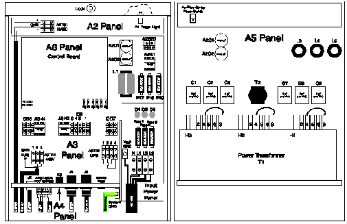
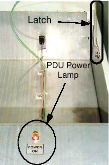
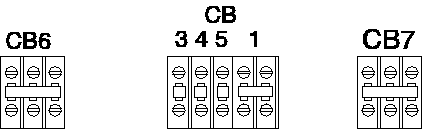
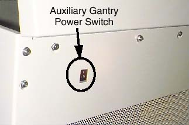

Operating Documentation
Direction 5114043-800, Rev# 9
LightSpeed 3.X Service Methods (Advanced)
Operating Documentation |
Illustration 1: CPDU Front & Rear - Exposed View (Model 2269902)

| NOTE: | For a full size version of this illustration, click on the pdf icon below. |
Media File 1: Full Size Illustration: CPDU Front & Rear - Exposed View (Model 2269902)

Do not perform any work within the Power Distribution Unit (PDU), unless it is de-energized. More than 100 Kilowatts of power exists in the PDU at various periods of time. Therefore, consider all points in the PDU as hazardous.
Connect voltage measuring equipment only when power is removed and the wall power box is locked and tagged.
Always wear safety glasses because of the high voltages that exist in the PDU. Components can literally EXPLODE when power is applied.
Be sure that all secondary protective covers on the PDUs are in place before the PDU is energized.
Axial drive power for gantry rotation (AC)
High voltage DC for X-ray generation (floating DC)
Distributed console, table and gantry power (AC)
With the PDU’s top cover hinged open, a small power lamp is visible. When illuminated, this lamp indicates power is present within the PDU. See Illustration 2.
Illustration 2: PDU Power Lamp (PDU Top Cover Opened and Latched)

The service outlet is protected by a circuit breaker. The outlet is located on the A4 panel. See Illustration 1.
CIRCUIT BREAKERS
There are three (3) groups of circuit breakers in the PDU used to protect various parts of the system.
CB1 - Console AC power.
CB3 - Table and Gantry AC service outlets.
CB4 - Table and Gantry AC to stationary electronics.
CB5 - Gantry rotating power, tilt power and communications.
CB6 - Main Axial drive power.
CB7 - Master 120/208VAC power (CB1, 3, 4 and 5).
Illustration 3: PDU Circuit Breakers

AUXILIARY GANTRY POWER SWITCH
Auxiliary gantry power switch should be left “ON” at all times. Used to disable 120VAC.
Illustration 4: Auxiliary Gantry Power Switch (PDU Rear)

The PDU’s top cover employs latches on both sides to hold the cover in the open position. See Illustration 2.